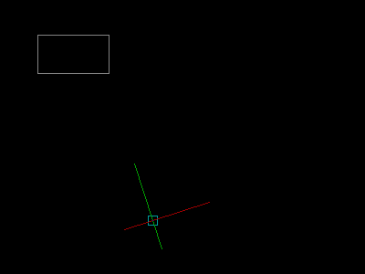

3-Point Rectangle
This page is delivered for consistency purposes only, as part of the LeeMac sample module of DynALisp, which shows how DynALisp turns existing AutoLISP programs into a module. The program and its description are the work of Lee Mac, who keeps all the credit for them. The original page, with the latest version, is on Lee Mac's website: https://lee-mac.com/3pointrectangle.html
See also GrSnap.
| Function Syntax | LM-ThreePointRectangle – original syntax: 3PR / 3PRD (dynamic) (see aliases) |
| Current Version | 1.2 |
| Compatible with AutoCAD for Mac? | No |
| Compatible with AutoCAD LT? | Yes |
| Original Page | lee-mac.com/3pointrectangle.html |
Program Description
This program enables the user to dynamically construct a rectangle defined by three supplied points.
The program offers two commands: 3PR and 3PRD which represent a standard & dynamic version of the program respectively.
Upon issuing either command at the AutoCAD command-line, the user is first prompted to specify two points defining one of the two pairs of parallel sides of the resulting rectangle.
Following valid responses to these prompts, the user is then prompted for a third point to determine the length and direction of the second pair of edges, which are constructed perpendicular to the edges defined by the first two points. If the dynamic command is used (3PRD) the program will display a real-time preview of the resulting rectangle whilst the user is prompted for the third point.
The user may exit the program at any time by pressing ENTER or by right-clicking at any prompt.
Following valid specification of all three points, the program will proceed to construct the defined rectangle using a 2D polyline (LWPolyline) object.
The dynamic version of the program utilises my GrSnap utility to enable full Object Snap functionality during the dynamic prompt. Furthermore, this program has also been designed to perform successfully under all UCS & View settings.
Demonstration

See also GrSnap.
Bundled program notes
<pre>
<code>
;;-----------------------=={ 3-Point Rectangle }==----------------------;;
;; ;;
;; This program enables the user to dynamically construct a rectangle ;;
;; defined by three supplied points. ;;
;; ;;
;; The program offers two commands: '3PR' and '3PRD' which represent ;;
;; a standard & dynamic version of the program respectively. ;;
;; ;;
;; Upon issuing either command at the AutoCAD command-line, the user ;;
;; is first prompted to specify two points defining one of the two ;;
;; pairs of parallel sides of the resulting rectangle. ;;
;; ;;
;; Following valid responses to these prompts, the user is then ;;
;; prompted for a third point to determine the length and direction ;;
;; of the second pair of edges, which are constructed perpendicular ;;
;; to the edges defined by the first two points. ;;
;; ;;
;; If the dynamic command is used ('3PRD') the program will display a ;;
;; real-time preview of the resulting rectangle whilst the user is ;;
;; prompted for the third point. ;;
;; ;;
;; The user may exit the program at any time by pressing 'Enter' or ;;
;; right-clicking at any prompt. ;;
;; ;;
;; Following valid specification of all three points, the program ;;
;; will proceed to construct the defined rectangle using an ;;
;; LWPolyline object. ;;
;; ;;
;; The dynamic version of the program utilises my GrSnap utility to ;;
;; enable full Object Snap functionality during the dynamic prompt. ;;
;; The latest version and full documentation for this application may ;;
;; be found at: http://www.lee-mac.com/grsnap.html ;;
;; ;;
;; Finally, this program has been designed to perform successfully ;;
;; under all UCS & View settings. ;;
;;----------------------------------------------------------------------;;
;; Author: Lee Mac, Copyright © 2013 - www.lee-mac.com ;;
;;----------------------------------------------------------------------;;
;; Version 1.0 - 2013-12-27 ;;
;; ;;
;; - First release. ;;
;;----------------------------------------------------------------------;;
;; Version 1.1 - 2020-10-31 ;;
;; ;;
;; - Modified the dynamic version to incorporate the ability to ;;
;; specify a side length when prompted for the third point. ;;
;;----------------------------------------------------------------------;;
;; Version 1.2 - 2021-10-06 ;;
;; ;;
;; - Modified to fix LWPolyline elevation relative to the active UCS. ;;
;;----------------------------------------------------------------------;;
</code>
</pre>
Command Names And Aliases
As in every DynALisp module, each program of this sample module has one main command, named LM-*, and the original command names of Lee Mac's page are kept as its aliases: they run the same command, and can be added, renamed or removed in Dyl-Suite (saved in Resources\Aliases.csv). The rows marked ↳ are child commands of LM-ThreePointRectangle: they are run by their alias, or picked from LM-ThreePointRectangle when it lists them (their command is named Pst-*).
| Command | Aliases | Name |
|---|---|---|
| LM-ThreePointRectangle | 3PR | 3-Point Rectangle |
| ↳ 3PR-H | – | 3-Point Rectangle Help |
| ↳ 3PRD-H | – | 3-Point Rectangle Dynamic Help |
| ↳ 3PRD | – | 3-Point Rectangle Dynamic |